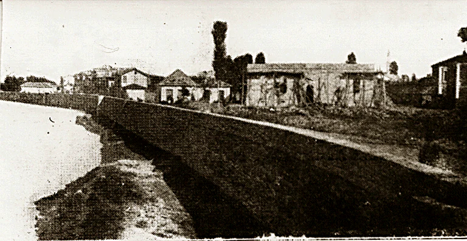
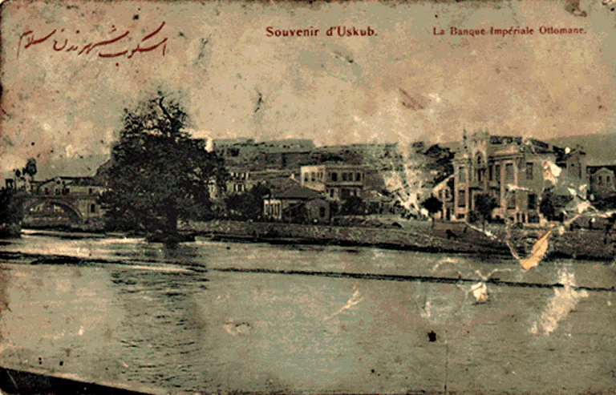
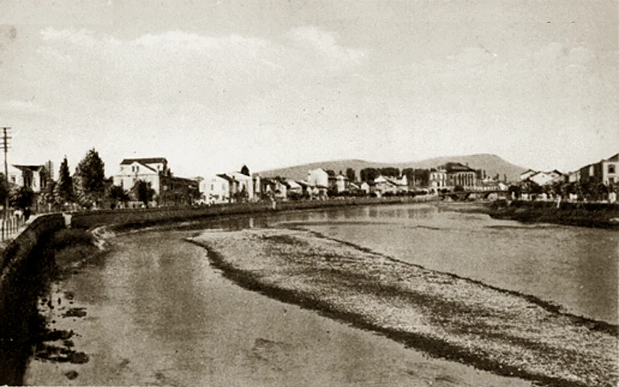

Στον ποταμό Βαρδάρη
- Σενάριο
- Ντιμίτριε Οσμανλί, Σιμόν Ντρακούλ
- Κάμερα
- Κίρο Μπιλμπιλόφσκι
- Έτος
- 1964
- Διάρκεια
- 00:16

Η προκυμαία «13 Νοεμβρίου» - 1888.

Νερόμυλος στον άνω ρου του Βαρδάρη - τέλη του 19ου αιώνα.

Παρότι αυτή η καρτ-ποστάλ είναι πολύ φθαρμένη, μπήκε στη συλλογή επειδή προέρχεται από τα τέλη του 19ου και τις αρχές του 20ού αιώνα, και φαίνονται κάποια κτίρια που υπάρχουν μόνο σε αυτήν. Δεξιά η Οθωμανική Τράπεζα. Στο πρώτο πλάνο ο παλιός πλάτανος όπου το 1689 κρεμάστηκε το νεκρό σώμα του Κάρπος. Από πάνω υψώνεται το φρούριο των Σκοπίων - Καλέ. Τέρμα αριστερά φαίνεται τμήμα της Πέτρινης γέφυρας.

Θέα των δύο προκυμαιών του Βαρδάρη - αρχές του 20ού αιώνα.

Σκόπια 1902 - θέα από την Πέτρινη γέφυρα προς την ξύλινη γέφυρα. Ο Βαρδάρης έχει ήδη τοίχους προκυμαίας. Διακρίνονται κατοικίες και δημόσια κτίρια. Δεξιά στη φωτογραφία διακρίνεται το τουρκικό θέατρο, και αριστερά, στην αρχή, το Τζαμί Μπουρμαλί. Στο βάθος το κτίριο της τράπεζας και το παλιό ταχυδρομείο.

Θέα προς το ξύλινο γεφυράκι, το παλιό τουρκικό θέατρο και τμήμα του φρουρίου των Σκοπίων - Καλέ. (αρχές του 20ού αιώνα)

Θέα από τη δεξιά όχθη του Βαρδάρη προς το φρούριο των Σκοπίων - Καλέ. (αρχές του 20ού αιώνα).

Θέα της αριστερής όχθης του Βαρδάρη (προκυμαία «Ντιμιτάρ Βλάχοφ») - αρχές του 20ού αιώνα. Στον τοίχο της προκυμαίας φαίνεται η εκβολή του ποταμού Σεράβα.

Η Ξύλινη γέφυρα, πριν από την κατασκευή της Σιδερένιας γέφυρας. Στο βάθος η Πέτρινη γέφυρα και το Τζαμί Μπουρμαλί. (τέλη του 19ου αιώνα)

Αρχές του 20ού αιώνα. Η Οθωμανική Τράπεζα, η Μητρόπολη των Σκοπίων και τα κτίρια στην αριστερή όχθη του Βαρδάρη, ακριβώς μετά την Πέτρινη γέφυρα. Στο πρώτο πλάνο ο παλιός πλάτανος.

Θέα της αριστερής όχθης του Βαρδάρη προς την εκκλησία του Αγίου Μηνά (με δύο τρούλους) και την εκκλησία της Παναγίας (στο βάθος με έναν τρούλο). - αρχές του 20ού αιώνα.

Στο πρώτο πλάνο το δικαστικό κτίριο και το παλιό σχολείο, και στο βάθος φαίνονται οι τρούλοι της εκκλησίας του Αγίου Μηνά - αρχές του 20ού αιώνα.

Θέα των δύο προκυμαιών του Βαρδάρη - αρχές του 20ού αιώνα.

Η αριστερή όχθη του Βαρδάρη - η προκυμαία «Ντιμιτάρ Βλάχοφ» με την Οθωμανική Τράπεζα, τη Μητρόπολη και τους δύο τρούλους της εκκλησίας του Αγίου Μηνά στο βάθος. (αρχές του 20ού αιώνα)

Η αριστερή όχθη του Βαρδάρη - η προκυμαία «Ντιμιτάρ Βλάχοφ», ανάμεσα στην Πέτρινη και τη Σιδερένια γέφυρα, με κατοικίες. (αρχές του 20ού αιώνα)

Η φωτογραφία τραβήχτηκε από την Πέτρινη γέφυρα, περίπου το 1910. Αριστερά φαίνεται το παλιό τουρκικό θέατρο, και πάνω από αυτό το φρούριο των Σκοπίων - Καλέ.

Η αριστερή όχθη του Βαρδάρη με την εβραϊκή συνοικία και στο βάθος το φρούριο των Σκοπίων - Καλέ. (1910)

Η φωτογραφία τραβήχτηκε από την Πέτρινη γέφυρα, περίπου το 1910. Αριστερά φαίνεται το παλιό τουρκικό θέατρο, και πάνω από αυτό το φρούριο των Σκοπίων - Καλέ.

Τα Σκόπια στην πλημμύρα του 1916. Το νερό έφτασε ως τα κτίρια. Στα δεξιά φαίνεται πώς κατέρρευσε μέρος ενός κτιρίου εξαιτίας της πλημμύρας.

Σκόπια μετά το 1918. Οι δύο προκυμαίες του Βαρδάρη ως διαμήκεις άξονες σημαντικοί για την ανάπτυξη της πόλης. Στο βάθος φαίνεται η Πέτρινη γέφυρα με το Τζαμί Μπουρμαλί. Φαίνεται η αναπτυγμένη δόμηση πολλών κτιρίων στην προκυμαία με ποικίλες αρχιτεκτονικές μορφές, κοντά στην ευρωπαϊκή σχολή.

Τα Σκόπια πριν από τον Βαλκανικό πόλεμο. Η προκυμαία στη δεξιά όχθη του Βαρδάρη. Στο βάθος φαίνονται το Τζαμί Μπουρμαλί και η Πέτρινη γέφυρα. Στο πρώτο πλάνο το ρωσικό προξενείο και άλλα κτίρια. Η αρχιτεκτονική έχει επιρροές της ευρωπαϊκής σχολής, με στοιχεία κλασικής, ακαδημαϊκής και ψευδοκλασικής μορφοποίησης.

Θέα της δεξιάς όχθης του Βαρδάρη με τα κτίρια της τράπεζας και του παλιού ταχυδρομείου, ανάμεσα στην Πέτρινη γέφυρα και το ξύλινο γεφυράκι - αρχές της δεκαετίας του 1920.

Θέα προς την αριστερή όχθη του Βαρδάρη. Στο πρώτο πλάνο το δικαστικό κτίριο και το παλιό σχολείο, και στο βάθος φαίνονται οι τρούλοι της εκκλησίας του Αγίου Μηνά. Δεξιά της η εκκλησία της Παναγίας. - Δεκαετία του 1920.

Θέα της δεξιάς όχθης του Βαρδάρη με τα κτίρια της τράπεζας και του παλιού ταχυδρομείου, ανάμεσα στην Πέτρινη γέφυρα και το ξύλινο γεφυράκι - αρχές της δεκαετίας του 1920.

Η δεξιά όχθη του Βαρδάρη μπροστά στην Πέτρινη γέφυρα. Αριστερά φαίνονται το κτίριο της τράπεζας και το παλιό ταχυδρομείο. Δεξιά στην καρτ-ποστάλ φαίνεται το ξύλινο γεφυράκι - περίπου 1920.

Θέα της δεξιάς όχθης του Βαρδάρη με τα κτίρια της τράπεζας και του παλιού ταχυδρομείου, ανάμεσα στην Πέτρινη γέφυρα και το ξύλινο γεφυράκι - αρχές της δεκαετίας του 1920.

Τμήμα της αριστερής όχθης του Βαρδάρη - περίπου η θέση του σημερινού κτιρίου της Μακεδονικής Ραδιοτηλεόρασης. Φαίνεται ο μιναρές του Τζαμιού Βαρντάρ Τεκέ (χτισμένο στις αρχές του 16ου αιώνα) - αρχές της δεκαετίας του 1920.

Τμήμα της αριστερής όχθης του Βαρδάρη - περίπου η θέση του σημερινού κτιρίου της Μακεδονικής Ραδιοτηλεόρασης. Φαίνεται ο μιναρές του Τζαμιού Βαρντάρ Τεκέ (χτισμένο στις αρχές του 16ου αιώνα) - αρχές της δεκαετίας του 1920.

Θέα της δεξιάς όχθης του Βαρδάρη μπροστά στην Πέτρινη γέφυρα. Ο μεσαίος χώρος της προκυμαίας. Αριστερά φαίνονται τα κτίρια της τράπεζας και του παλιού ταχυδρομείου. Δεξιά στην καρτ-ποστάλ φαίνεται το ξύλινο γεφυράκι - περίπου 1920.

Σκόπια - τμήμα της πλατείας. Αριστερά φαίνεται τμήμα της Πέτρινης γέφυρας, και δεξιά ο χώρος πριν από την ανέγερση της Εθνικής Τράπεζας. Η προκυμαία έχει διαμορφωθεί ως δρόμος κυκλοφορίας. Στο βάθος δεξιά φαίνεται το Γυμνάσιο Αρρένων.

Σκόπια - τμήμα της πλατείας. Αριστερά φαίνεται τμήμα της Πέτρινης γέφυρας, και δεξιά ο χώρος πριν από την ανέγερση της Εθνικής Τράπεζας. Η προκυμαία έχει διαμορφωθεί ως δρόμος κυκλοφορίας. Στο βάθος δεξιά φαίνεται το Γυμνάσιο Αρρένων. - Δεκαετία του 1930

Η προκυμαία «Ντιμιτάρ Βλάχοφ» - αριστερή όχθη του Βαρδάρη. - αρχές της δεκαετίας του 1920

Θέα από την Πέτρινη γέφυρα προς το μνημείο των πεσόντων αγωνιστών και την Οθωμανική Τράπεζα. - Δεκαετία του 1920.

Πανοραμική εικόνα των Σκοπίων, δηλαδή της αριστερής προκυμαίας του Βαρδάρη με τμήμα της εβραϊκής συνοικίας, τη συνοικία Πάικο και την Πέτρινη γέφυρα. - Δεκαετία του 1920

Θέα των Σκοπίων από τη Λέσχη Αξιωματικών προς την εβραϊκή συνοικία. - Δεκαετία του 1920.

Θέα της δεξιάς όχθης του Βαρδάρη με κατοικίες. Στο βάθος φαίνονται η Πέτρινη γέφυρα και η ανέγερση της Λέσχης Αξιωματικών. (περίπου 1925)

Σκόπια, Δεκαετία του 1930. Θέα των δύο προκυμαιών. Στο πρώτο πλάνο το παλιό σχολείο και το δικαστικό κτίριο, και αμέσως πίσω φαίνονται τα δύο καμπαναριά της εκκλησίας του Αγίου Μηνά. Στο βάθος φαίνεται η Λέσχη Αξιωματικών, πριν από την ανέγερση της Εθνικής Τράπεζας. Η φωτογραφία τραβήχτηκε από τη Σιδερένια γέφυρα.

Η προκυμαία στη δεξιά όχθη του Βαρδάρη μπροστά στην Πέτρινη γέφυρα. Στο πρώτο πλάνο πολυκατοικία με μαγαζιά στο ισόγειο και εισόδους στη στοά «Αροέστι», που χτίστηκε τη δεκαετία του 1920 και αποτελούσε μικρό εμπορικό κέντρο με βιοτεχνικά και εμπορικά μαγαζιά. (Στον καταστροφικό σεισμό του 1963 σε αυτό το σημείο σκοτώθηκαν πολλοί άνθρωποι.) Στο βάθος φαίνονται η Αγροτική Τράπεζα, η Λέσχη Αξιωματικών, η Εθνική Τράπεζα και η Πέτρινη γέφυρα. (Δεκαετία του 1930)

Η προκυμαία «13 Νοεμβρίου» με πολυκατοικίες, τμήμα της Πέτρινης γέφυρας και τη Λέσχη Αξιωματικών - Δεκαετία του 1920.

Θέα προς την προκυμαία «13 Νοεμβρίου» στη δεξιά όχθη του Βαρδάρη, την Πέτρινη γέφυρα και τη Λέσχη Αξιωματικών - φωτογραφία περίπου του 1927.

Τμήμα της πλατείας μπροστά στην Πέτρινη γέφυρα και οι δύο όχθες του Βαρδάρη. Αριστερά στο βάθος φαίνονται η εκκλησία του Αγίου Μηνά με τους δύο τρούλους και λίγο πιο αριστερά η εκκλησία της Παναγίας. Η προκυμαία είναι διαμορφωμένη, με ηλεκτρικό φωτισμό και πράσινο. (1925-1930)

Η δεξιά όχθη του Βαρδάρη, από το ξύλινο γεφυράκι προς το πάρκο - Δεκαετία του 1930.

Η προκυμαία «13 Νοεμβρίου». Θέα προς την Πέτρινη γέφυρα και τη Λέσχη Αξιωματικών - τέλη της δεκαετίας του 1930.

Η προκυμαία στην αριστερή όχθη του Βαρδάρη μπροστά στην Πέτρινη γέφυρα με κατοικίες της εβραϊκής συνοικίας. Στο βάθος φαίνεται η Οθωμανική Τράπεζα - περίπου 1930.

Θέα από την Πέτρινη γέφυρα στον Βαρδάρη προς το ξύλινο γεφυράκι και τις δύο όχθες του ποταμού. Δεξιά το Εθνικό Θέατρο, και αριστερά το κτίριο της τράπεζας και το παλιό ταχυδρομείο. - Δεκαετία του 1930

Θέα της συνοικίας «Μπουνιάκοβετς». Η κοίτη του Βαρδάρη προστατεύεται με χωμάτινα αναχώματα. - Δεκαετία του 1930

Η αριστερή και η δεξιά όχθη του Βαρδάρη. Φωτογραφία από την Πέτρινη γέφυρα. Ο μεσαίος χώρος της προκυμαίας και στις δύο πλευρές του Βαρδάρη. - περίπου 1930

Η δεξιά όχθη του Βαρδάρη. Προκυμαία «13 Νοεμβρίου». - περίπου 1930

Σκόπια, Δεκαετία του 1930. Θέα των δύο προκυμαιών. Θέα από τη Σιδερένια γέφυρα του Βαρδάρη προς τις δύο προκυμαίες, χτισμένες με κατοικίες και δημόσια κτίρια. Στο πρώτο πλάνο δεξιά το παλιό σχολείο, το δικαστικό κτίριο και τα δύο καμπαναριά της εκκλησίας του Αγίου Μηνά. Στο βάθος η Λέσχη Αξιωματικών και η Εθνική Τράπεζα.

Θέα προς την προκυμαία «13 Νοεμβρίου» στη δεξιά όχθη του Βαρδάρη, την Πέτρινη γέφυρα και τη Λέσχη Αξιωματικών - φωτογραφία περίπου του 1930.

Θέα των δύο προκυμαιών του Βαρδάρη και της Σιδερένιας γέφυρας. - Δεκαετία του 1950

Θέα των δύο προκυμαιών του Βαρδάρη και της τσιμεντένιας γέφυρας. - Δεκαετία του 1950.

Η δεξιά όχθη του Βαρδάρη μετά την Πέτρινη γέφυρα, φωτογραφημένη πριν από τον καταστροφικό σεισμό της 26ης Ιουλίου 1963. Στο βάθος φαίνονται η Λέσχη Αξιωματικών και η Εθνική Τράπεζα.

Η προκυμαία στη δεξιά όχθη του Βαρδάρη. Συγκρότημα γραφείων και κατοικιών ή «Πύργοι του Βαρδάρη» (αρχιτέκτονας Αλεξάνταρ Σεραφιμόφσκι). Η φωτογραφία τραβήχτηκε τη δεκαετία του 1960, πριν από τον καταστροφικό σεισμό της 26ης Ιουλίου 1963.

Η δεξιά όχθη του Βαρδάρη με την Πέτρινη γέφυρα, τους πύργους δίπλα στον Βαρδάρη και το Γκραντ Οτέλ «Σκόπια», φωτογραφημένη αμέσως μετά τον καταστροφικό σεισμό της 26ης Ιουλίου 1963 και πριν από τη διευθέτηση του Βαρδάρη. Η διευθέτηση έγινε την περίοδο 1965-1968.

Θέα προς τη δεξιά όχθη του Βαρδάρη. Η καμάρα στο πρώτο πλάνο είναι μέρος της Πέτρινης γέφυρας· η φωτογραφία είναι της δεκαετίας του 1950.

Θέα από την αριστερή όχθη του Βαρδάρη προς την Πέτρινη γέφυρα. Στο βάθος φαίνονται οι Πύργοι του Βαρδάρη. - Δεκαετία του 1970

Θέα του σημερινού κεντρικού ταχυδρομείου - Κέντρο Τηλεπικοινωνιών (χτισμένο 1974-1980, αρχιτέκτονας Γιάνκο Κωνσταντίνοφ) και της προκυμαίας μπροστά του.

 Υδραγωγείο4 καρτ-ποστάλ
Υδραγωγείο4 καρτ-ποστάλ Καλέ30 καρτ-ποστάλ
Καλέ30 καρτ-ποστάλ Γέφυρες60 καρτ-ποστάλ
Γέφυρες60 καρτ-ποστάλ Προκυμαία58 καρτ-ποστάλ
Προκυμαία58 καρτ-ποστάλ Πλατεία46 καρτ-ποστάλ
Πλατεία46 καρτ-ποστάλ Κτίρια66 καρτ-ποστάλ
Κτίρια66 καρτ-ποστάλ Χριστιανικοί ναοί19 καρτ-ποστάλ
Χριστιανικοί ναοί19 καρτ-ποστάλ Μουσουλμανικά κτίρια33 καρτ-ποστάλ
Μουσουλμανικά κτίρια33 καρτ-ποστάλ Λέσχη Αξιωματικών29 καρτ-ποστάλ
Λέσχη Αξιωματικών29 καρτ-ποστάλ Θέατρο28 καρτ-ποστάλ
Θέατρο28 καρτ-ποστάλ Σιδηροδρομικός σταθμός13 καρτ-ποστάλ
Σιδηροδρομικός σταθμός13 καρτ-ποστάλ Σχολεία36 καρτ-ποστάλ
Σχολεία36 καρτ-ποστάλ Πάρκα12 καρτ-ποστάλ
Πάρκα12 καρτ-ποστάλ Αγορές18 καρτ-ποστάλ
Αγορές18 καρτ-ποστάλ Δρόμοι38 καρτ-ποστάλ
Δρόμοι38 καρτ-ποστάλ Πανόραμα I60 καρτ-ποστάλ
Πανόραμα I60 καρτ-ποστάλ Πανόραμα II30 καρτ-ποστάλ
Πανόραμα II30 καρτ-ποστάλ Κολάζ55 καρτ-ποστάλ
Κολάζ55 καρτ-ποστάλ Πλημμύρες9 καρτ-ποστάλ
Πλημμύρες9 καρτ-ποστάλ Σεισμός27 καρτ-ποστάλ
Σεισμός27 καρτ-ποστάλ Σκόπια 200026 καρτ-ποστάλ
Σκόπια 200026 καρτ-ποστάλ